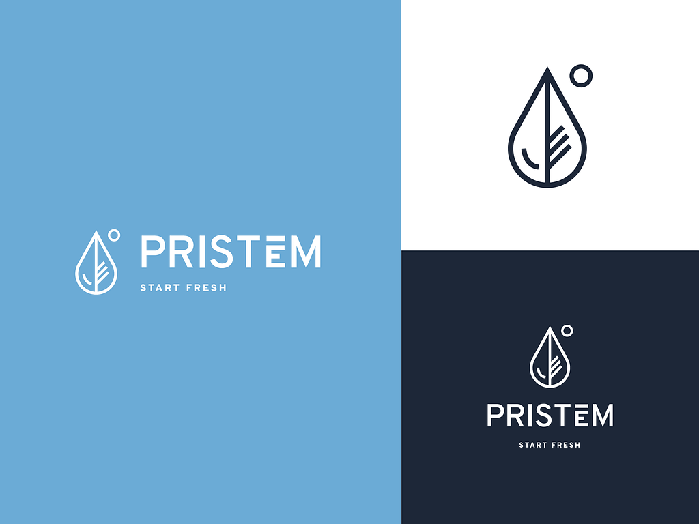
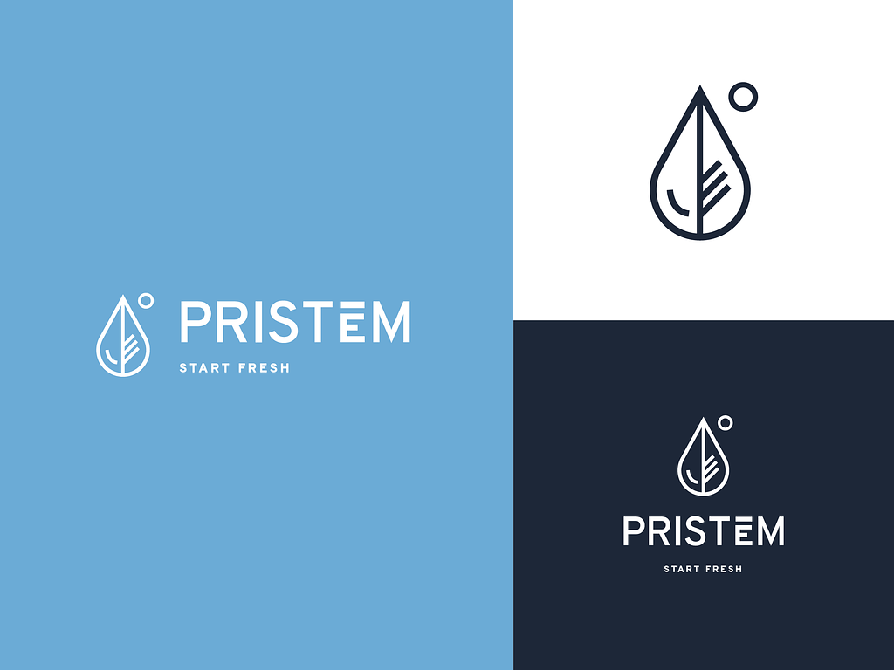

Hello, I'm Monica.

New York based Design leader building products, growing designers and guiding teams at the intersection of design and technology.
More about me
- ✨ Director, Design & Core Experiences @ JW Player
- 👩🏻💼 Director of Product Design @ JW Player
- 🙋🏻♀️ Lead Product Designer @ Mayo Clinic / Jibe
- 👩🏻🏫 Product Design Fellow @ Significance Labs Fellowship
- 👩🏻💻 Digital Designer @ Thomson Reuters / SPIN Magazine / Newsweek
- 👩🏻 Web Designer @ Magnani Caruso Dutton
I'm currently working in the curiously complex space of Generative AI and LLMs at Mayo Clinic's Center for Digital Health.


 
